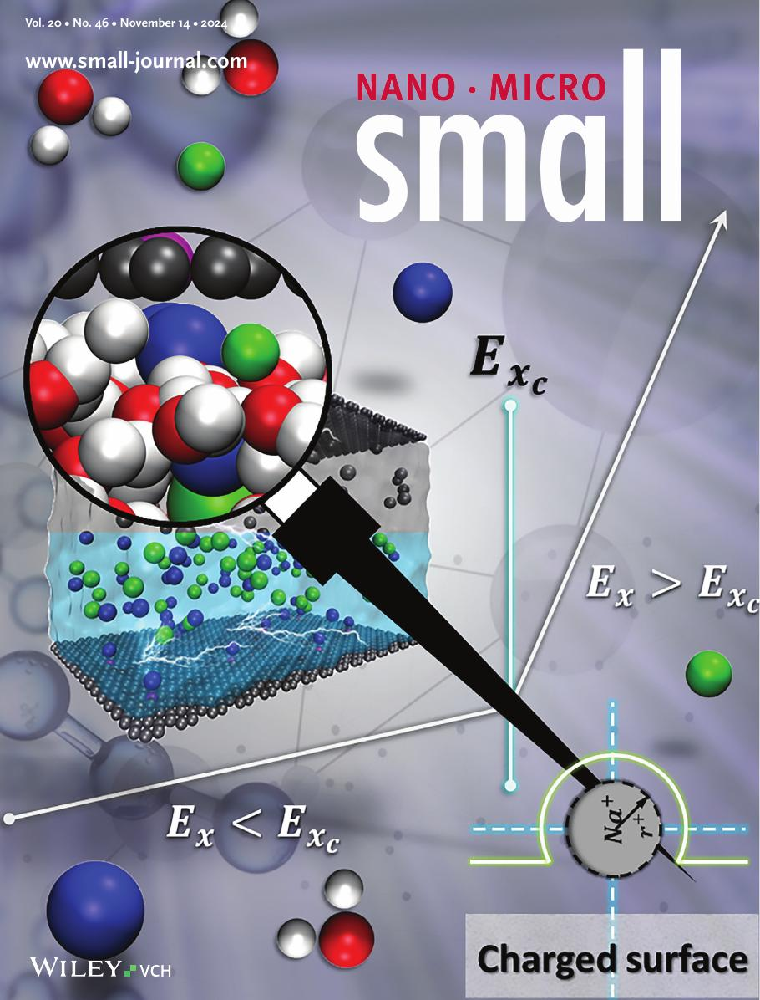

Research themes
Electrokinetics & electric double layers
Molecular simulation of electroosmotic transport in sub-1 nm channels, and how ion concentration, surface charge, and confinement reshape flow and local viscosity.
Flow under extreme confinement
Anomalous water transport in sub-nanometer carbon nanoconfinement, and the redefinition of flow regimes where classical hydrodynamics no longer applies.
Interfacial heat transfer
Non-equilibrium molecular dynamics of dissimilar molecular interfaces — where Fourier's law holds, where it breaks, and what sets thermal resistance at the atomic scale.
Featured on the cover of Small

2024 · SmallApplied Electric Field Effects on Diffusivity and Electrical Double-Layer Thickness
Latest news
- Jul 2026Joined the Nanoengineering Research Center at the University of Tennessee at Chattanooga as a Postdoctoral Research Associate.
- 2026US patent application published — Method and apparatus for nanofluid wet cleansing wafer.
- 2025Cover of Small — Anomalous Water Flow in Sub-Nanometer Carbon Nanoconfinement.
- Sep 2025Joined Cornell University as a Postdoctoral Associate, Robert F. Smith School of Chemical and Biomolecular Engineering.
- Sep 2024NRF Korea press release on the Small paper picked up by national media. Read more.
If you can't explain it simply, you don't understand it well enough. — Albert Einstein